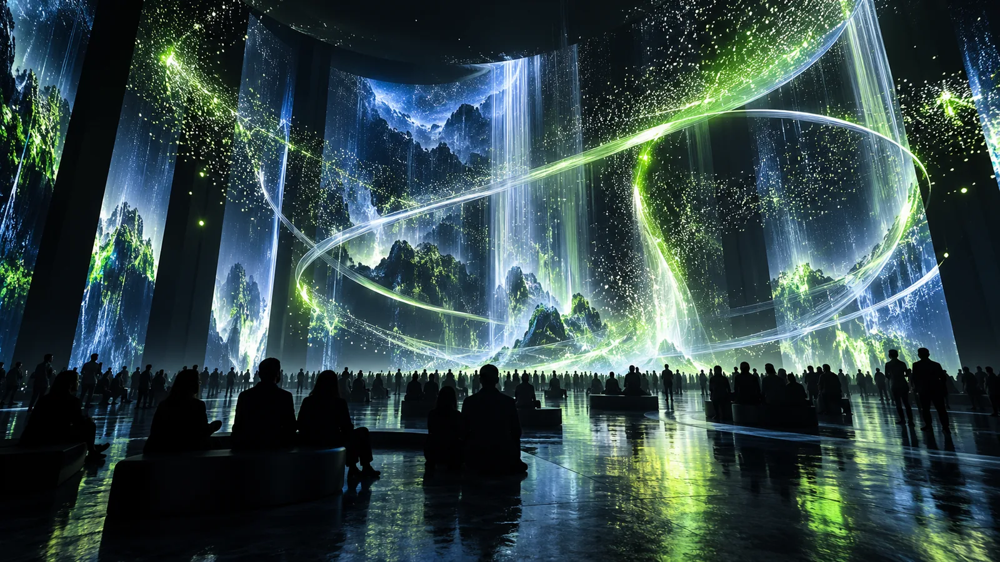

Projection mapping on domes and 360-degree surfaces
How to plan projection mapping on a dome, cylinder or immersive room: projector layout, light bounce, content format, warping, seating and a checklist.

A dome changes almost every assumption a team makes about projection. There is no front, no single best seat, and no flat plane to line a projector up against. Light from one side of the surface lands on the opposite side, the audience looks up instead of ahead, and a video that looks right on a monitor can look stretched, dim or washed out overhead. This note covers what we ask about a dome or other 360-degree surface at AKS before we agree on a plan, and what a client can do to make the project go smoothly.
What counts as a 360-degree surface
People use "dome" loosely, so the first job is to be precise. A full dome covers most of the sky above the audience, as in a planetarium. A partial or tilted dome covers a section of it. A cylinder or drum surrounds the audience at eye level, and a mapped room or tunnel wraps walls, ceiling and sometimes floor. Each one needs different content, different projector positions and a different way of judging the result.
The useful question is where the audience sits and where they look. In a planetarium-style dome, people usually face one direction with their heads tilted back. In a cylinder they turn to follow the action. In a mapped room they may walk. That answer shapes everything else, including where the key story moments should appear.
Projectors facing each other share light
On a flat wall, light that misses the surface is lost. On a dome, light that hits the surface bounces around the inside. A bright image on one side raises the black level on the other side, which lowers contrast across the whole picture. The effect is strongest on bright, white-painted surfaces, and it is the reason a dome often looks flatter than the projectors alone would suggest.
We handle this in three ways. We choose a surface finish with moderate reflectivity instead of the brightest one available. We design content with real dark areas and avoid filling the whole dome with bright white. And we test the full image, not one projector at a time, because the interaction only shows up when everything is on. Our note on colour and contrast explains the contrast side in more detail.
How the projectors are arranged
There are two common approaches. In the first, several projectors sit around the edge of the dome, or on the floor, and each covers a segment, with overlaps blended together. In the second, a small number of projectors with very wide lenses, or a single projector with a fisheye lens, sit at or near the centre and cover the whole surface. Which one suits a project depends on the dome size, the access, the budget and the brightness required.
- Several projectors give more total resolution and brightness, but they need careful alignment and blending. See our guide to edge blending.
- A central fisheye setup is simpler to align, but its resolution and brightness are limited by one projector, and the equipment sits where the audience might want to be.
- Mounting positions must keep the audience out of the light path and out of the way of anyone working on the rigging. Read our note on rigging and mounting for the structural questions.
Whatever the layout, the projectors must be fixed firmly. A dome is usually mapped to a precise model, and a small shift in a projector position can move an overlap line by a visible amount.
Content is built differently for a dome
Standard widescreen video does not fit a dome. Dome content is usually authored in a format designed for the surface, such as a circular fisheye frame or a set of cube faces, and then converted to the projector layout. Planetarium-style content is commonly delivered as a square frame that holds a circular image, and the resolution of that frame is a key specification. Ask the studio which format and resolution it will deliver, and check that your media server can play it. We cover this kind of question in our guide to the canvas resolution workflow.
A few content rules save trouble:
- Keep the main action in the part of the dome the audience naturally looks at, usually the area in front of and above their seating, not the extreme edge or the very top.
- Avoid fast camera moves and rapid rotation. On a surface that fills the field of view, they can make some people feel unsteady. Slow, deliberate movement is safer.
- Keep text and logos small in scale and well inside the main viewing zone. Straight lines and text distort easily when they travel across a curved surface.
- Remember the horizon. People judge a dome by its horizon line, so keep it level and consistent unless tilting is the intention.
Flashing and strobing deserve extra care, since they cover much more of the field of view than on a screen. We follow the same principles described in our note on flicker and strobe safety.
Alignment and warping on a curved surface
Because the surface is curved, each projector's image has to be warped to match it. This can be done with a measured 3D model of the dome, with camera-based calibration, or with a mix of both. A camera-based method is fast for repeated installations, but it still needs a human to check the result by eye, especially along blend zones and near the edges. We plan time for this on site, and we do not treat it as a quick job. The general principles are in our guide to aligning and warping, and a good survey of the dome gives the calibration a solid starting point.
Tell your studio about the real surface early. Seams, panels, structural ribs, lighting fixtures and ventilation grilles all interrupt the image. Some can be hidden by content, and some need to be treated as holes in the model.
Sound, seating and comfort
A dome is an acoustic space as well as a visual one. Hard curved surfaces can focus sound and create echoes, so the sound plan should be designed for the room and not borrowed from a standard stage show. Our note on sound and visual sync covers keeping image and audio together.
Seating matters as much as projection. Reclined seating or floor seating makes looking up comfortable. Standing audiences tire quickly with their heads tilted back, so shorter sequences, or content that brings the action lower, work better. Plan clear exits and safe walkways in a darkened space, and agree on lighting levels with the venue.
Checklist for a dome or 360-degree project
| Question | Why it matters |
|---|---|
| What shape and size is the surface, and what is its finish? | Drives projector count, brightness and internal light bounce |
| Where does the audience sit, and which way do they face? | Decides where the key content goes |
| Where can projectors be mounted, and how are they supported? | Sets the layout, access and safety plan |
| Which content format and resolution will be delivered? | Must match the media server and the projector layout |
| How will warping and blending be calibrated and checked? | Determines the time needed on site |
| What are the sound, seating and exit arrangements? | Affects comfort and safety |
| Is there a backup playback machine? | Protects the show if one system fails |
Plan the dome test early
The most reliable way to avoid surprises is a test with real content on the real surface before the final design is locked. Even a short loop with a grid, a bright scene and a dark scene shows how the contrast, blend zones and geometry behave. If the dome is not yet built or not available, a previsualization model helps, as described in our previsualization workflow, though it cannot replace seeing the surface under real light.
We have mapped large heritage and civic surfaces, including Mohatta Palace in Karachi and the Pakistan Monument, and the same lesson applies to any surface that is not flat: time spent on the survey and the calibration is never wasted. If you have a dome, a drum or an immersive room in mind, send us its dimensions, photographs and the experience you want to create through the contact section, and we will outline how we would approach it.
Planning a dome or 360-degree show?
Tell AKS Creative Studio about the surface, the audience and the date, and we will outline a plan.
Start a conversation ↗